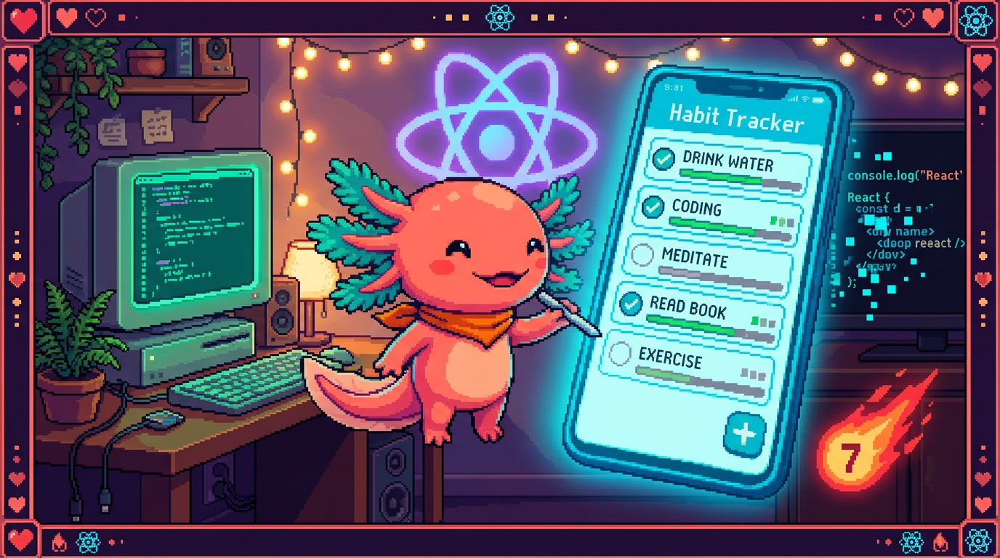

Capítulo 14 — Mini-proyecto: una mini app de hábitos

Este es el capítulo donde todo lo que aprendiste se junta en una sola obra. Vas a construir, paso a paso y con tus propias manos, una versión chiquita de RachaSimple: una app que lista hábitos y te deja añadir, marcar como hecho y borrar, con un formulario controlado, un hook personalizado llamado
useHabitsy, al final, persistencia en localStorage para que tus hábitos sigan ahí cuando recargas. Nada de Supabase ni TanStack Query: solo React puro, para que veas con claridad cómo encajan componentes, props, estado, efectos y hooks. Bit, nuestro ajolote, se puso el casco de obra: hoy se construye.
1. Qué vamos a construir (y por qué así)
RachaSimple, tu app real, está hecha con React 18 + TypeScript + Vite + Tailwind + shadcn/ui + Supabase + TanStack Query. Es una app completa, con servidor y base de datos. Lo que vamos a hacer aquí es una maqueta suya: la misma idea (hábitos que marcas cada día), pero sin servidor. Todo vive en el navegador, así que la puedes correr en tu computadora sin configurar absolutamente nada.
La app tendrá tres componentes y un hook:
useHabits— el hook personalizado que guarda la lista y sabe añadir, marcar y borrar.HabitForm— el formulario controlado para escribir un hábito nuevo.HabitItem— una fila que muestra un hábito y sus botones.App— el componente raíz que junta todo.
🟦 ¿Qué significa? — Mini-proyecto (o maqueta)
Un mini-proyecto es una versión reducida y autocontenida de una app real, hecha para practicar un concepto sin cargar con toda la complejidad. Te sirve para aprender el esqueleto antes de enfrentarte al edificio entero. Aquí copiamos la idea de RachaSimple (lista de hábitos, marcar a diario) pero dejamos fuera lo que distrae a quien empieza: el servidor, la autenticación y la caché de datos.
🟦 ¿Qué significa? — Hook personalizado
Un hook personalizado es una función tuya cuyo nombre empieza por
use(aquíuseHabits) y que agrupa lógica de estado y efectos para reutilizarla. Te sirve para sacar el "cerebro" de un componente a un sitio aparte, de modo queAppquede limpio y la lógica se pueda probar y reutilizar. Lo viste a fondo en el capítulo 09; aquí lo aplicas por primera vez en un proyecto completo. RachaSimple tiene su propiouseHabits, solo que apoyado en el servidor.💡 Tip
No leas este capítulo de corrido. Ábrelo junto a tu editor y escribe cada bloque de código en cuanto aparezca. A construir se aprende construyendo, no mirando.
2. Preparar el proyecto en tu computadora 💻
Vamos a crear un proyecto React con Vite, la misma herramienta que usa RachaSimple.
🟦 ¿Qué significa? — Vite
Vite es una herramienta que arranca un proyecto de React, lo sirve en tu navegador mientras programas y lo empaqueta para publicarlo. Su gracia es que ves tus cambios al instante sin tener que configurar nada a mano. RachaSimple usa Vite de verdad; por eso lo usamos también aquí.
🟦 ¿Qué significa? —
npmy la terminal
npm(Node Package Manager) es la herramienta de línea de comandos que instala y arranca proyectos de JavaScript: descarga librerías y ejecuta tareas comonpm run dev. La terminal es la ventana de texto donde escribes esos comandos. Sirve para montar y mover el proyecto sin botones, solo con instrucciones escritas. RachaSimple y Faro se manejan connpm; PolyPaw, al ser Python, usa otras herramientas equivalentes.
En una terminal, ejecuta:
npm create vite@latest mini-rachas -- --template react-ts
cd mini-rachas
npm install
npm run dev
🟦 ¿Qué significa? — Plantilla
react-tsLa plantilla
react-tsle dice a Vite "crea un proyecto de React con TypeScript". Sirve para empezar con todo ya enchufado: React, el compilador de TypeScript y la estructura de carpetas. El-tses lo que hace que tus archivos sean.tsx(React + TypeScript), igual que los de RachaSimple y Faro.
Cuando npm run dev arranque, te dará una dirección parecida a http://localhost:5173. Ábrela
en el navegador: verás la pantalla de ejemplo de Vite. Vamos a reemplazarla por nuestra app.
🔎 En tu código
RachaSimple se arranca igual:
npm run devlevanta Vite. En Faro (Next.js 15) el comando es el mismo (npm run dev), aunque por dentro use otra herramienta. PolyPaw, en cambio, es Python con Flet: ahí no haynpmni navegador, se corre con Python. Cada stack tiene su forma de arrancar.
3. El tipo Habit: decidir la forma del dato
Antes de tocar React, decide cómo es un hábito. En TypeScript (módulo 05) eso se escribe con
un type. Crea el archivo src/types.ts:
export type Habit = {
id: string; // identificador único de cada hábito
name: string; // el texto, p. ej. "Beber agua"
done: boolean; // ¿ya lo marcaste hoy?
};
🟦 ¿Qué significa? —
type(tipo)Un
typeen TypeScript describe la forma que debe tener un dato: qué campos lleva y de qué clase es cada uno. Te sirve para que el editor te avise cuando te equivocas (por ejemplo, si escribesdone: "sí"en vez detrue). En RachaSimple existe un tipoHabitparecido, generado a partir de la tabla de Supabase, con más campos (color, fecha de creación, etc.).💡 Tip — Empieza por el dato
Decidir la forma del dato antes de programar la interfaz es un hábito de profesional. Si ya sabes que un hábito tiene
id,nameydone, también sabes qué mostrar y qué botones necesitas. El dato manda; la pantalla lo sigue.
4. El hook useHabits: el cerebro de la app
Aquí vive toda la lógica. Crea src/useHabits.ts. Vamos a empezar sin localStorage (lo
añadiremos en el apartado 8) para no mezclar conceptos de golpe.
import { useState } from 'react';
import type { Habit } from './types';
export function useHabits() {
const [habits, setHabits] = useState<Habit[]>([]);
// Añadir un hábito nuevo a partir de su nombre.
function addHabit(name: string) {
const nuevo: Habit = {
id: crypto.randomUUID(),
name,
done: false,
};
setHabits((prev) => [...prev, nuevo]);
}
// Cambiar done de true a false (o al revés) en un hábito.
function toggleHabit(id: string) {
setHabits((prev) =>
prev.map((h) => (h.id === id ? { ...h, done: !h.done } : h))
);
}
// Quitar un hábito de la lista.
function removeHabit(id: string) {
setHabits((prev) => prev.filter((h) => h.id !== id));
}
return { habits, addHabit, toggleHabit, removeHabit };
}
Vamos pieza por pieza, porque aquí está el 80 % del capítulo.
🟦 ¿Qué significa? —
useState<Habit[]>([])
useStatees el hook que le da memoria a un componente o hook. Le dijimos que guarda un array de hábitos (Habit[]) y que empieza vacío ([]). Devuelve dos cosas: el valor actual (habits) y una función para cambiarlo (setHabits). Cada vez que llamassetHabits, React vuelve a dibujar lo que dependa de esa lista. Es el mismouseStatedel capítulo 04.🟦 ¿Qué significa? —
crypto.randomUUID()
crypto.randomUUID()es una función del navegador que genera un identificador único (un texto largo e irrepetible, del estilo"a1b2c3..."). Sirve para darle a cada hábito unidpropio, de modo que puedas marcarlo o borrarlo sin confundirlo con otro. En RachaSimple eseidlo pone Supabase al guardar; aquí, como no hay servidor, lo generamos nosotros.🟦 ¿Qué significa? — Inmutabilidad, el spread
...,.map()y.filter()Inmutabilidad significa no modificar el array original, sino crear uno nuevo con el cambio; React necesita esto para darse cuenta de que algo cambió. El operador spread (
...) copia:[...prev, nuevo]crea una lista nueva con todo lo de antes más el hábito nuevo..map()recorre y transforma (entoggleHabit, solo al hábito delidle invertimosdonecon{ ...h, done: !h.done })..filter()devuelve la lista sin lo que no cumple (enremoveHabit, todos menos el delid). Los tres crean listas nuevas y no tocan el original. Cuando le pasas una función asetHabits, React te entrega el valor más reciente enprev: es la forma segura de hacerlo cuando el nuevo valor depende del anterior. Todo esto es JavaScript del módulo 03.⚠️ Cuidado —
!h.doneinvierte, no "marca siempre hecho"
done: !h.donesignifica "pondoneal contrario de como está": si erafalsepasa atrue, y si eratruepasa afalse. Por esotoggleHabitsirve tanto para marcar como para desmarcar. Si pusierasdone: truea secas, nunca podrías desmarcar un hábito.🔎 En tu código
En RachaSimple este "cerebro" no usa
useStatecon un array local: usa TanStack Query (useHabitsconuseQuery) para traer los hábitos de Supabase yuseMutationpara crearlos. La idea es idéntica —un hook que expone la lista y las acciones— pero la fuente de datos es el servidor en vez de la memoria del navegador. Lo viste en el capítulo 11.
5. HabitForm: el formulario controlado
Ahora la interfaz para escribir un hábito. Crea src/HabitForm.tsx:
import { useState } from 'react';
type HabitFormProps = {
onAdd: (name: string) => void;
};
export function HabitForm({ onAdd }: HabitFormProps) {
const [text, setText] = useState('');
function handleSubmit(e: React.FormEvent) {
e.preventDefault();
const limpio = text.trim();
if (limpio === '') return; // no añadir hábitos vacíos
onAdd(limpio);
setText(''); // vaciar el campo tras añadir
}
return (
<form onSubmit={handleSubmit}>
<input
type="text"
value={text}
onChange={(e) => setText(e.target.value)}
placeholder="Nuevo hábito..."
/>
<button type="submit">Añadir</button>
</form>
);
}
🟦 ¿Qué significa? — Formulario controlado (componente controlado)
Un formulario controlado es aquel donde el valor del
inputlo manda React, no el navegador. Lo conseguimos con dos cosas:value={text}(el input muestra lo que dice el estado) yonChange={(e) => setText(e.target.value)}(cada tecla actualiza el estado). Sirve para que React sea siempre la "única fuente de verdad" de lo que hay escrito: así puedes validarlo, vaciarlo o transformarlo cuando quieras. Lo viste a fondo en el capítulo 07.🟦 ¿Qué significa? —
propsy el callbackonAddLas props son los datos y funciones que un componente padre le pasa a un hijo. Aquí
HabitFormrecibe la proponAdd, que es una función (un callback). Cuando el usuario envía el formulario, el form no sabe cómo se guarda un hábito: solo llamaonAdd(limpio)y deja que el padre decida. Así el formulario queda reutilizable y no está pegado a una app concreta. Esto es exactamente lo del capítulo 03.🟦 ¿Qué significa? —
onSubmit,e.preventDefault()y validar con.trim()
onSubmitse dispara al enviar el formulario (con el botón o con Enter).e.preventDefault()evita el comportamiento por defecto del navegador, que sería recargar la página entera; sin esa línea tu app se reiniciaría y perderías todo..trim()quita los espacios de los extremos, para que un hábito de solo espacios cuente como vacío y no se añada: a esa comprobación previa a guardar se le llama validar, y RachaSimple también valida que el nombre no esté vacío.🟦 ¿Qué significa? —
e: React.FormEventCuando escribes
handleSubmit(e: React.FormEvent), laees el evento: un objeto que React te entrega con información de lo que pasó (qué formulario se envió) y métodos comopreventDefault(). La parte: React.FormEventes solo el tipo de TypeScript que describe ese objeto, para que el editor sepa qué puedes hacer coney te autocomplete. Trabajas con más seguridad: si te equivocas de método, el editor te avisa antes de ejecutar.💡 Tip — Vaciar el campo tras añadir
Fíjate en el
setText('')del final dehandleSubmit. Como el input es controlado, basta con poner el estado a cadena vacía para que el campo se limpie solo. Sin componentes controlados, tendrías que tocar el DOM a mano (el DOM es el árbol de elementos HTML que el navegador dibuja en pantalla; manipularlo "a mano" sería buscar el input y vaciarlo tú mismo). Esta es una de las grandes comodidades de React.
6. HabitItem: una fila con sus botones
Cada hábito de la lista será una fila. Crea src/HabitItem.tsx:
import type { Habit } from './types';
type HabitItemProps = {
habit: Habit;
onToggle: (id: string) => void;
onRemove: (id: string) => void;
};
export function HabitItem({ habit, onToggle, onRemove }: HabitItemProps) {
return (
<li>
<input
type="checkbox"
checked={habit.done}
onChange={() => onToggle(habit.id)}
/>
<span style={{ textDecoration: habit.done ? 'line-through' : 'none' }}>
{habit.name}
</span>
<button onClick={() => onRemove(habit.id)}>Borrar</button>
</li>
);
}
🟦 ¿Qué significa? — Componente de presentación
Un componente de presentación es un componente que solo dibuja lo que recibe por props y avisa de los clics, sin guardar estado propio.
HabitItemno sabe nada de la lista completa: recibe unhabity dos funciones (onToggle,onRemove). Sirve para tener piezas pequeñas, reutilizables y fáciles de leer. En RachaSimple,HabitCard.tsxcumple este papel: muestra una tarjeta de hábito y delega las acciones hacia arriba.🟦 ¿Qué significa? — Renderizado condicional con el ternario
El ternario
condición ? A : Belige entre dos valores según una condición. Aquíhabit.done ? 'line-through' : 'none'tacha el texto si el hábito está hecho. Es la manera de que la interfaz reaccione al estado: el mismo componente se ve distinto segúndone. Lo viste en el capítulo 06.🟦 ¿Qué significa? — Checkbox controlado (
checked+onChange)Igual que el input de texto, este checkbox es controlado:
checked={habit.done}hace que la marca dependa del estado, yonChangeavisa al padre para que cambie ese estado. No guardamos "marcado/desmarcado" en el navegador: lo guarda React en la lista de hábitos. Una sola fuente de verdad, otra vez.⚠️ Cuidado —
onClick={() => onRemove(habit.id)}, noonClick={onRemove(habit.id)}Tienes que pasarle a
onClickuna función, no el resultado de llamarla. Si escribesonClick={onRemove(habit.id)}(sin la flecha), React llamaríaonRemoveal dibujar, no al hacer clic, y borraría el hábito de inmediato. La flecha() => ...crea una función que se ejecuta cuando ocurre el clic. Es el error más común de principiante; tenlo presente.
7. App: juntar todas las piezas
Ahora el componente raíz, el que orquesta todo. Reemplaza el contenido de src/App.tsx:
import { useHabits } from './useHabits';
import { HabitForm } from './HabitForm';
import { HabitItem } from './HabitItem';
export default function App() {
const { habits, addHabit, toggleHabit, removeHabit } = useHabits();
const hechos = habits.filter((h) => h.done).length;
return (
<main>
<h1>Mini RachaSimple</h1>
<HabitForm onAdd={addHabit} />
{habits.length === 0 ? (
<p>Aún no tienes hábitos. ¡Añade el primero!</p>
) : (
<ul>
{habits.map((habit) => (
<HabitItem
key={habit.id}
habit={habit}
onToggle={toggleHabit}
onRemove={removeHabit}
/>
))}
</ul>
)}
<p>
Llevas {hechos} de {habits.length} hechos hoy.
</p>
</main>
);
}
Mira lo limpio que quedó App: una sola línea trae todo del hook, el formulario recibe addHabit
y la lista se pinta recorriendo habits. App no tiene useState: toda la memoria vive en
useHabits. Ese es el premio de haber sacado la lógica a un sitio aparte.
🟦 ¿Qué significa? — Renderizar una lista con
.map()ykeyPara dibujar una lista, recorremos
habitscon.map()y devolvemos un<HabitItem>por cada uno. La prop especialkeyle da a React un identificador estable de cada fila (habit.id) para que sepa cuál cambió, se añadió o se borró, y redibuje solo lo necesario. Sinkey, React se hace un lío al reordenar o eliminar. Esto es del capítulo 06.🟦 ¿Qué significa? — "Levantar el estado" (lifting state up)
El estado (la lista) vive arriba, en el hook que usa
App, no dentro de cada hijo.HabitFormyHabitItemno guardan la lista: la reciben y avisan de los cambios con sus callbacks. A esto se le llama levantar el estado: ponerlo en el ancestro común para que todos los hijos compartan la misma verdad. Es el patrón estándar de React y el que usa RachaSimple entre sus pantallas y tarjetas.🟦 ¿Qué significa? — Estado derivado (
hechos)
hechosno es un estado nuevo: se calcula a partir dehabitsen cada render (habits.filter((h) => h.done).length). A los datos que salen de otro estado se les llama estado derivado. La regla de oro: si puedes calcularlo, no lo guardes en otrouseState. Guardar un contador aparte solo te daría dos verdades que tarde o temprano se contradicen.💡 Tip — Compila mentalmente el flujo
Sigue un clic: pulsas el checkbox →
HabitItemllamaonToggle(id)→ que estoggleHabitdel hook → este hacesetHabitscon la lista nueva → React redibujaApp→ la fila se tacha y el contador sube. Datos hacia abajo (props), avisos hacia arriba (callbacks). Ese ciclo es toda la app.
8. Persistir en localStorage con un efecto
Si recargas ahora, tus hábitos desaparecen: viven solo en memoria. Vamos a guardarlos en el
navegador con localStorage y un efecto. Vuelve a src/useHabits.ts y modifícalo así:
import { useState, useEffect } from 'react';
import type { Habit } from './types';
const STORAGE_KEY = 'mini-rachas:habits';
// Leer el valor inicial desde localStorage (o array vacío si no hay nada).
function leerInicial(): Habit[] {
const guardado = localStorage.getItem(STORAGE_KEY);
if (!guardado) return [];
try {
return JSON.parse(guardado) as Habit[];
} catch {
return []; // si el dato estaba corrupto, empezamos limpio
}
}
export function useHabits() {
const [habits, setHabits] = useState<Habit[]>(leerInicial);
// Cada vez que la lista cambie, la guardamos.
useEffect(() => {
localStorage.setItem(STORAGE_KEY, JSON.stringify(habits));
}, [habits]);
function addHabit(name: string) {
const nuevo: Habit = { id: crypto.randomUUID(), name, done: false };
setHabits((prev) => [...prev, nuevo]);
}
function toggleHabit(id: string) {
setHabits((prev) =>
prev.map((h) => (h.id === id ? { ...h, done: !h.done } : h))
);
}
function removeHabit(id: string) {
setHabits((prev) => prev.filter((h) => h.id !== id));
}
return { habits, addHabit, toggleHabit, removeHabit };
}
Respecto al apartado 4 solo cambiaron dos cosas: de dónde sale el valor inicial y un efecto que guarda. Lo demás es idéntico. Veámoslas.
🟦 ¿Qué significa? —
localStorage
localStoragees un pequeño almacén que el navegador guarda en el disco del usuario y que sobrevive a las recargas y a cerrar la pestaña. Guarda pares de texto: una clave ('mini-rachas:habits') y un valor. Sirve para recordar cosas sin servidor: preferencias, borradores, o aquí, la lista de hábitos. Como solo guarda texto, necesitamos convertir.🟦 ¿Qué significa? —
JSON.stringifyyJSON.parse
JSON.stringify(habits)convierte tu array en texto para guardarlo (localStorage solo entiende texto);JSON.parse(guardado)hace lo contrario al leer. Son dos funciones de JavaScript (módulo 03) que van siempre de la mano: una para guardar, otra para recuperar.🟦 ¿Qué significa? — Inicializador perezoso (
useState(leerInicial))Fíjate que pasamos
useState(leerInicial)— la función, sin paréntesis — y nouseState(leerInicial()). Así React la ejecuta una sola vez, al montar, en vez de en cada render. Eso es un inicializador perezoso (lazy initializer): sirve para que la lectura de localStorage (que es lenta) no se repita inútilmente en cada dibujo.🟦 ¿Qué significa? —
useEffectcon dependencia[habits]
useEffectejecuta código después de que React dibuja, para cosas que tocan el "mundo exterior" (aquí, el almacén del navegador). El array[habits]son sus dependencias: significa "vuelve a ejecutar este efecto cada vez quehabitscambie". Así, cada vez que añades, marcas o borras se dispara un guardado automático. Lo viste a fondo en el capítulo 08.⚠️ Cuidado — El
try/catchno es decorativoSi el dato guardado se corrompiera (porque alguien lo editó a mano, o porque cambió el formato),
JSON.parselanzaría un error y tu app no arrancaría. Eltry/catchatrapa ese fallo y devuelve un array vacío para empezar limpio en lugar de romperse. Programar a la defensiva alrededor de datos externos es señal de madurez.🔎 En tu código
RachaSimple no usa localStorage para los hábitos: usa Supabase (base de datos en la nube) para que tus rachas estén en cualquier dispositivo. Pero el patrón —leer al inicio, guardar cuando cambie— es el mismo que aplicarás con servidores. PolyPaw persiste su progreso en archivos JSON locales: misma idea de "guardar texto", distinto entorno.
9. Probarlo y entender el ciclo completo 💻
Guarda todo y mira tu navegador en http://localhost:5173. Deberías poder:
- Escribir "Beber agua" y pulsar Añadir → aparece en la lista, el campo se vacía.
- Marcar el checkbox → el texto se tacha y el contador "Llevas 1 de 1" sube.
- Pulsar Borrar → la fila desaparece.
- Recargar la página (F5) → tus hábitos siguen ahí. 🎉
Si los cuatro pasos funcionan, acabas de construir una app de React completa, con todo lo del módulo trabajando junto.
💡 Tip — Inspecciona localStorage
Abre las herramientas de desarrollador del navegador (F12), ve a la pestaña Application (o Almacenamiento) → Local Storage. Verás tu clave
mini-rachas:habitscon el JSON de tus hábitos. Verlo con tus propios ojos hace que "persistencia" deje de ser una palabra abstracta.⚠️ Cuidado — Si algo no aparece, revisa la consola
Cuando una pantalla se queda en blanco, casi siempre hay un error rojo en la consola (F12 → Console). Léelo: suele decirte el archivo y la línea. Olvidar un
export, unimportmal escrito o unakeyfaltante son los culpables más frecuentes en este proyecto.
10. Repaso: qué concepto del módulo usó cada pieza
Para que veas que de verdad lo integraste todo, este es el mapa:
- Componentes (cap. 02):
App,HabitForm,HabitItem. - JSX (cap. 02): todo el HTML dentro de los
return. - Props (cap. 03):
onAdd,habit,onToggle,onRemove. - Estado con
useState(cap. 04): la listahabitsy eltextdel formulario. - Eventos y formularios controlados (cap. 07):
onSubmit,onChange,onClick,e.preventDefault(). - Listas y renderizado condicional (cap. 06):
.map(),key, el ternario, el&&implícito del "lista vacía". useEffect(cap. 08): el guardado automático en localStorage.- Hook personalizado (cap. 09):
useHabits, que encapsula todo el cerebro.
💡 Tip — Esta maqueta es el plano de RachaSimple
Cuando abras el RachaSimple real, reconocerás el mismo esqueleto: un hook que expone la lista y las acciones, componentes de presentación que reciben props y avisan hacia arriba, y un punto donde se persiste. Solo cambian las piezas de abajo (Supabase y TanStack Query en vez de
useStatey localStorage). El plano es idéntico.
✅ Checklist — ¿ya domino esto?
- [ ] Arranqué un proyecto React con Vite y plantilla
react-ts. - [ ] Definí un
type Habity entiendo por qué decidir el dato primero. - [ ] Escribí
useHabitsconuseStatey las funcionesaddHabit,toggleHabit,removeHabit. - [ ] Explico por qué uso
...(spread),.map()y.filter()en vez de modificar el array. - [ ] Construí un formulario controlado con
value,onChange,onSubmitye.preventDefault(). - [ ] Entiendo por qué
HabitItemrecibe props y avisa con callbacks en vez de guardar estado. - [ ] Sé qué es levantar el estado y por qué la lista vive en el hook, no en los hijos.
- [ ] Reconozco el estado derivado (
hechos) y por qué no lo guardo aparte. - [ ] Persistí en localStorage con
JSON.stringify/JSON.parsey unuseEffectcon[habits]. - [ ] Probé los cuatro pasos (añadir, marcar, borrar, recargar) y funcionaron.
🧪 Ejercicios
-
En papel. Dibuja el flujo de datos cuando el usuario marca un checkbox: qué componente avisa, qué función del hook se ejecuta, qué hace
setHabitsy qué se redibuja. Usa flechas "hacia abajo" para props y "hacia arriba" para callbacks. -
En papel. Explica por qué
Appno necesita ningúnuseState, y de dónde sale entonces la memoria de la app. ¿Qué pasaría si moviéramos la lista a unuseStatedentro deHabitItem? -
💻 Construye la app entera. Sigue los apartados 2 a 9 hasta tener la maqueta funcionando con persistencia. No copies y pegues: escribe cada archivo. Verifica los cuatro pasos del apartado 9.
-
💻 Botón "Limpiar hechos". Añade en
useHabitsuna funciónclearDone()que borre solo los hábitos condone: true(pista:filterpor!h.done). Ponla enAppcon un botón "Limpiar hechos" y compruébalo. -
💻 Contador de racha. Amplía el tipo
Habitcon un campostreak: numberque empiece en 0. Haz quetoggleHabit, al marcar un hábito (pasar adone: true), subastreaken 1. Muéstralo enHabitItemcomo "🔥 3". (Reto: ¿qué hacer al desmarcar?) -
💻 Editar el nombre (reto). Añade a
useHabitsuna funciónrenameHabit(id, nuevoNombre)y enHabitItemun pequeño formulario controlado para editar el texto de un hábito. Esto te obliga a combinar formulario controlado + props + actualización inmutable con.map(), justo lo que practicaste en todo el capítulo.
Cierre de Bit: lo lograste. 🎉 Empezaste el módulo sin saber qué era un componente y acabas de construir, de cero, una app de hábitos con estado, efectos, props, formularios controlados y un hook propio que persiste datos. Eso es RachaSimple en miniatura, hecho por ti. Guárdala con cariño: es la prueba de que ya piensas en React. Bit cuelga el casco de obra y aplaude desde su frasco.